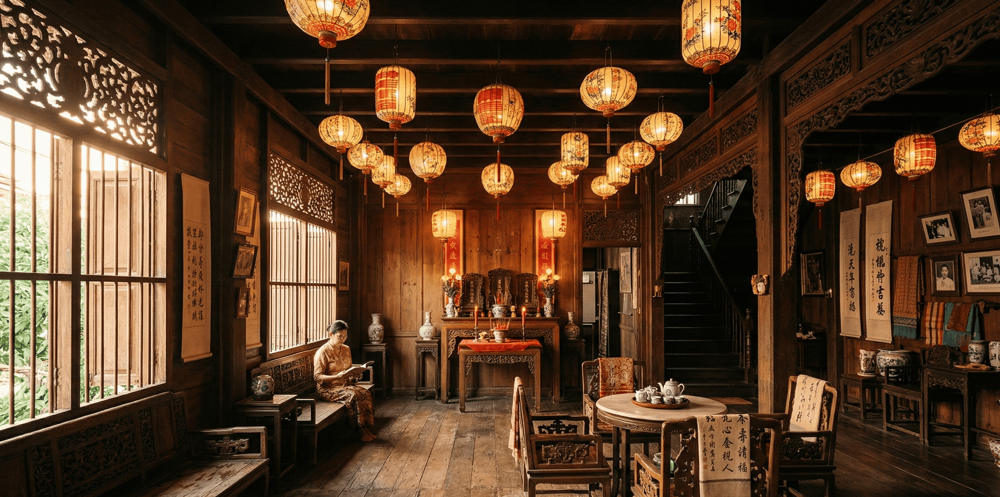

เมืองเก่าภูเก็ตไม่ได้แค่เก่า มันคือบทกวีสามมิติที่เขียนด้วยปูนปั้น โค้งประตู และสีทาผนังร้อยกว่าปีก่อน ในทุกอาคารมีเรื่องราวของผู้คนสองโลกที่เลือกจะสร้างสิ่งใหม่ร่วมกัน แทนที่จะยืนฝ่ายตรงข้ามกัน
รากเหง้าของเมืองเก่า
ในช่วงปลายศตวรรษที่ 19 ภูเก็ตคือหนึ่งในศูนย์กลางเหมืองแร่ดีบุกที่สำคัญที่สุดในภูมิภาค เงินทองที่ไหลเข้ามาจากแร่ดีบุกดึงดูดทั้งชาวจีนฮกเกี้ยน พ่อค้าชาวยุโรป และเจ้าอาณานิคมโปรตุเกสและอังกฤษเข้ามาตั้งรกราก การผสมผสานของวัฒนธรรมเหล่านี้ไม่ได้เกิดขึ้นแค่ในอาหาร ภาษา และประเพณี แต่ยังถูกแสดงออกอย่างชัดเจนที่สุดในสถาปัตยกรรม
ชุมชนบาบ๋าและยารา (Peranakan) ในภูเก็ตเกิดจากการแต่งงานระหว่างชายชาวจีนฮกเกี้ยนกับหญิงชาวพื้นเมือง วัฒนธรรมลูกครึ่งนี้มีภาษา อาหาร ชุด และสถาปัตยกรรมเป็นของตัวเองที่ไม่ได้จัดอยู่ในวัฒนธรรมไหนเพียงวัฒนธรรมเดียว

ชิโน-โปรตุกีส: สไตล์ที่เกิดจากการประนีประนอม
สถาปัตยกรรมที่เป็นเอกลักษณ์ของเมืองเก่าภูเก็ตถูกเรียกว่า "ชิโน-โปรตุกีส" (Sino-Portuguese) แต่ที่จริงแล้วมันซับซ้อนกว่านั้น มันคือการผสมอย่างน้อยสามวัฒนธรรม ได้แก่ สถาปัตยกรรมจีนใต้จากฮกเกี้ยน ความโรแมนติกของโคโลเนียลยุโรป และความสำอางของสไตล์ Peranakan ที่พัฒนาขึ้นในคาบสมุทรมลายู
| รูปแบบ | มาจาก | ลักษณะที่เห็นได้ |
|---|---|---|
| โค้งหน้าต่าง | โปรตุกีส / ยุโรป | หน้าต่างโค้งสูง ประดับปูนปั้น ให้ความรู้สึกสง่างาม |
| ห้องแถวหน้ากว้าง | จีนฮกเกี้ยน | ทางเดินใต้หลังคาหน้าอาคาร ให้ร่มเงาและพื้นที่พักในสภาพอากาศร้อน |
| ปูนปั้นดอกไม้ | Peranakan / ไทย-มาเลย์ | ลวดลายดอกไม้นูนสูงรอบกรอบหน้าต่างและประตู สีสันสดใส |
| หลังคาทรงจั่ว | จีน / เอเชียตะวันออกเฉียงใต้ | หลังคาลาดชัน ระบายความร้อนได้ดี บางหลังมีกระเบื้องตกแต่งปลายจั่ว |
| สีสันสดใส | Peranakan | เหลืองมัสตาร์ด เขียวอมฟ้า ชมพูฝุ่น แดงอิฐ — ทำให้ทุกอาคารมีบุคลิกเป็นของตัวเอง |


องค์ประกอบสำคัญที่ต้องสังเกต
เมื่อเดินในเมืองเก่า หลายคนแค่ถ่ายรูปแล้วก็เดินต่อ แต่ถ้าหยุดดูสักครู่ คุณจะพบว่าทุกอาคารมีรายละเอียดที่บอกเล่าตัวตนของเจ้าของ สถานะทางสังคม และความฝันที่พวกเขาฝากไว้ในผนังปูน
"บ้านในเมืองเก่าไม่ได้แค่อยู่อาศัย มันคือนามบัตรของเจ้าของ บอกว่าคุณคือใคร มาจากไหน และฝันถึงอะไร" — นักประวัติศาสตร์สถาปัตยกรรม ภาคใต้ของไทย
สีสันของเมือง: ภาษาที่ไม่ต้องใช้คำ
สีของอาคารในเมืองเก่าภูเก็ตไม่ได้ถูกเลือกแบบสุ่ม แต่ละโทนสีมีที่มาและความหมายในตัวเอง ตั้งแต่เหลืองมัสตาร์ดที่แสดงถึงความมั่งคั่ง ชมพูฝุ่นที่อ่อนโยนแบบ Peranakan ไปจนถึงเขียวมรกตที่แสดงถึงความสดชื่นและการผสมผสานกับธรรมชาติเขตร้อน


ช่างในยุคนั้นใช้เม็ดสีธรรมชาติที่ผสมในปูนขาวสดก่อนทา (fresco technique) ซึ่งทำให้สีซึมเข้าไปเป็นส่วนหนึ่งของผนังแทนที่จะเคลือบอยู่ด้านนอก เทคนิคนี้ทนทานกว่าสีทาสมัยใหม่มาก
ถนนที่ควรเดิน
เมืองเก่าภูเก็ตมีถนนสำคัญหลายสายที่แต่ละสายมีบุคลิกและประวัติศาสตร์เป็นของตัวเอง การรู้จักแต่ละถนนล่วงหน้าจะทำให้คุณเห็นมากกว่าแค่ผนังสวยๆ
-
01ถนนดีบุก (Dibuk Road)
หัวใจของเมืองเก่า เต็มไปด้วยอาคารชิโน-โปรตุกีสสภาพสมบูรณ์ที่สุด บางหลังกลายเป็นร้านกาแฟและโรงแรมบูติก แต่ยังคงรักษาโครงสร้างดั้งเดิมไว้แทบทุกซอกมุม -
02ถนนกระบี่ (Krabi Road)
ถนนสายสำคัญที่เคยเป็นย่านการค้าหลัก เปลี่ยนจากตลาดดีบุกมาเป็นแหล่งศิลปะและวัฒนธรรม มี Street Art ที่มีชื่อเสียงระดับโลกอยู่หลายจุด -
03ถนนถลาง (Thalang Road)
ถนนที่เก่าแก่ที่สุดในเมืองเก่า ชื่อตามวีรกรรมของท้าวเทพกระษัตรี มีพิพิธภัณฑ์ ศาลเจ้า และตึกแถวที่เก่าที่สุดบางหลังในภูเก็ต -
04ซอยรมณีย์ (Rommanee Lane)
ซอยสายสั้นๆ ที่มีการอนุรักษ์สภาพดีที่สุดในภูเก็ต สีสันบนผนังสดใสราวกับทาใหม่ ยามค่ำมีการประดับไฟสวยงาม เหมาะสำหรับถ่ายภาพที่สุด

ความเชื่อมโยงกับหลอซานเฮ้าส์
บ้านหลอซานไม่ได้เกิดขึ้นโดดเดี่ยวจากประวัติศาสตร์เหล่านี้ มันเป็นส่วนหนึ่งของเรื่องราวใหญ่ — ยุคสมัยที่ผู้คนสร้างบ้านเพื่อให้มันมีความหมายมากกว่าแค่ที่พักอาศัย ทุกเสา ทุกคาน ทุกรอยแกะสลักในบ้านหลอซานล้วนเป็นส่วนหนึ่งของภาษาสถาปัตยกรรมที่เคยพูดถึงความฝัน ฐานะ และความภูมิใจของคนยุคนั้น
เมื่อคุณมาเยือนหลอซานเฮ้าส์ คุณไม่ได้แค่เข้าไปในบ้าน คุณกำลังเดินเข้าไปในส่วนหนึ่งของประวัติศาสตร์ที่ยังมีลมหายใจ ยังมีกลิ่นของครัว ยังมีเสียงของผู้คนที่รักมันอย่างจริงจัง
ที่หลอซานเฮ้าส์ เรายินดีนำเยี่ยมชมรายละเอียดสถาปัตยกรรมและเล่าเรื่องราวเบื้องหลังทุกชิ้นส่วนของบ้านให้ฟัง ตั้งแต่เสาไม้สักที่ยังคงแข็งแรง ไปจนถึงลวดลายฉลุที่ช่างฝีมือในยุคนั้นใช้เวลาทำนานหลายสัปดาห์